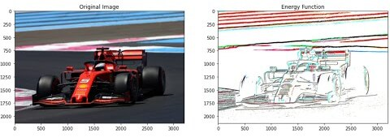
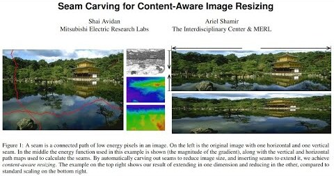
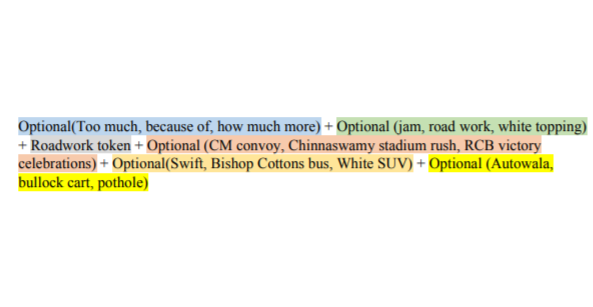

There's no importance whatsoever. I'm just doing it for the fun of
it - Richard Feynman, Surely You're Joking Mr. Feynman
This is a list of all my research projects. I'm not entirely sure how to structure
this yet because I also want to include failed attempts at solving problems.
However, that might not be what people want to see when they load this page.
The title
"Spinning Plates" is from the famous Richard Feynman story where he's burned
out and realizes that the reason he enjoyed doing Physics was because he used to
play with it.
2022
|  | Yasaswi Sri Chandra Gandhi Kilaru Seam Carving. Part 2: Energy Function YouTube 2022 [description][www][BibTeX] |
|  | Yasaswi Sri Chandra Gandhi Kilaru Seam Carving. Part 1: Intuition and Ideas YouTube 2022 [description][www][BibTeX] |
|  | Yasaswi Sri Chandra Gandhi Kilaru, Indrajit
Ghosh Traffic event description based on Twitter data using Unsupervised Learning Methods for Indian road conditions TPMDC 2020 [abstract][paper][www][BibTeX] |
Updated: July 20, 2023